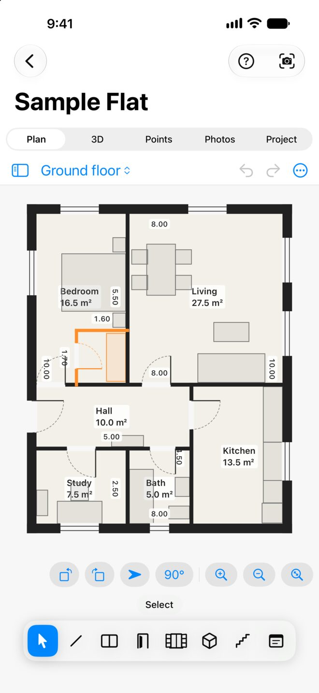
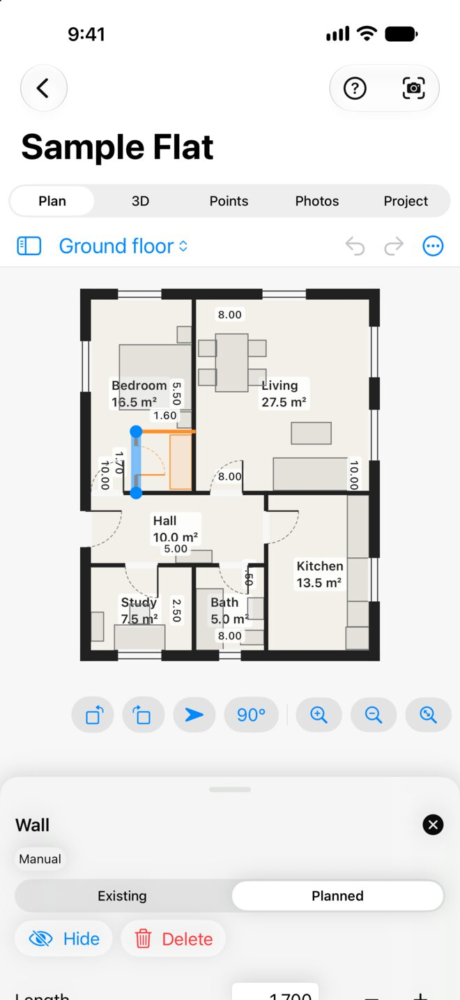
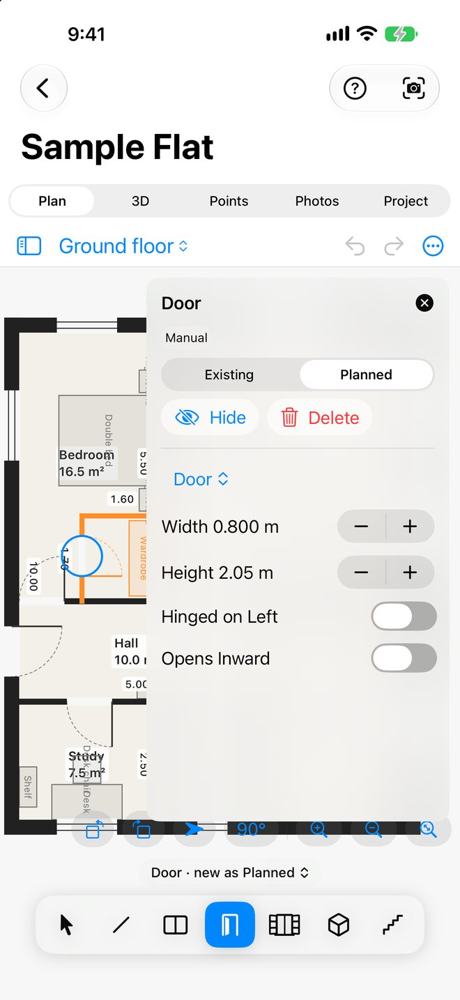
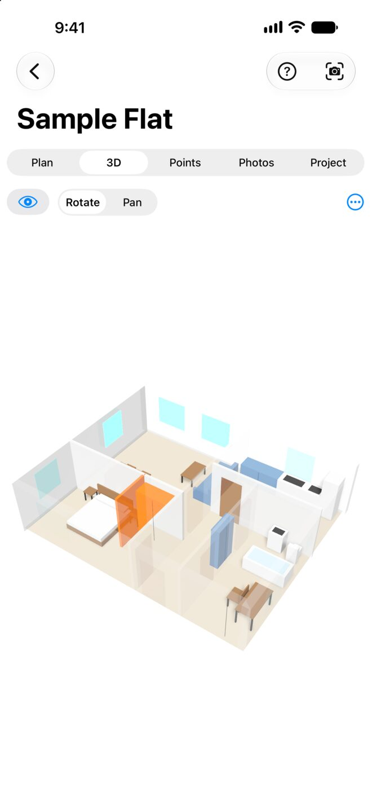

Scan your rooms.
Plan your floor plan.
RaumPlan turns a LiDAR scan from your iPhone Pro into a floor plan you can correct and edit. Scanning needs an iPhone Pro or iPad Pro, viewing and editing also works on the Mac and on Apple Vision Pro.
- Free
- No account
- No ads
- No data collected


What RaumPlan looks like
Screenshots from the app with a sample flat.


From scan to plan
RaumPlan is for anyone who wants to capture and replan a flat or a house: when moving, renovating, or just to finally have an up-to-date floor plan.
LiDAR scanning
Walk along the walls with your iPhone Pro. RaumPlan detects walls, doors, windows and furniture and merges several rooms into one floor.
With photos or LiDAR only
Saving photos can be switched on or off. Photos can be removed from a project later with one tap, while the plan and measurements stay.
Correct and plan
The scan stays untouched, your changes live in a separate layer on top. Draw walls and glass walls, snap doors and windows, place objects, correct lengths with a laser measurement. New elements are marked as planned.
3D and point cloud
See the plan as a 3D model with see-through front walls, the scanned mesh, and the point cloud colored by photo, type or height.
Keep working on the Mac
Edit the plan on a big screen, compute a floor image and high-resolution panoramas from your photos, and export everything.
On Apple Vision Pro
The building as a dollhouse on your table, a tour through the panoramas, and the plan at full scale over the real room.
On all your devices
Projects in iCloud Drive show up on iPhone, iPad, Mac and Vision Pro automatically. One device edits, the others see the changes within seconds.
Open formats
SVG at 1:50 or 1:100, DXF for CAD software, JSON, point cloud as PLY and mesh as OBJ. A project is a plain folder.
Your data stays with you
No account, no ads, no analytics. RaumPlan sends nothing to the developer. Everything stays on your device or in your own iCloud Drive.
Process on the Mac
- Point cloud from your captures, filtered by the cleaned-up plan: without furniture and without points outside the rooms
- Floor image as a top view under the floor plan
- High-resolution panoramas for the tour
- Export as SVG, DXF, JSON, PLY and OBJ
Walk through it on Apple Vision Pro
- Dollhouse: the whole floor as a model in your space, grab and rotate
- Tour: jump from viewpoint to viewpoint through the panoramas
- On site: overlay the plan 1:1 on the real room and see planned walls where they would stand
What you need
| Device | What works | Requires |
|---|---|---|
| iPhone Pro, iPad Pro with LiDAR | Scanning, plan editing, 3D, point cloud | iOS / iPadOS 18 |
| Other iPhones and iPads | View and edit plans, no scanning | iOS / iPadOS 18 |
| Mac | Editing, processing, export, no scanning | macOS 15 |
| Apple Vision Pro | Dollhouse, tour, on-site view, no scanning | visionOS 26 |
A hobby project
RaumPlan is built in my spare time, not by a company. I make the app the way I would like to use it myself. That's why some features are “good enough” for now and will stay that way for a while instead of being polished to the last detail.
I'm still very happy to hear from you: what you like, what's missing and what bothers you. Bug reports are especially helpful. Just tell me which device it happened on and what you were doing, so I can reproduce the problem.